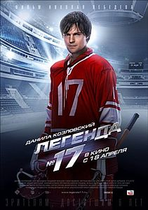

| 
|
Легенда № 17
«Леге́нда № 17» — российский художественный фильм 2013 года режиссёра Николая Лебедева производства студии «ТриТэ». Фильм основан на реальных событиях и рассказывает о восхождении к славе советского хоккеиста Валерия Харламова и о первом матче Суперсерии СССР — Канада 1972 года.
Премьера состоялась 18 апреля 2013 года в Москве в кинотеатре «Октябрь». Удостоен шести премий «Золотой орёл», в том числе как лучший фильм года. В 2014 году был удостоен Государственной премии Российской Федерации. |